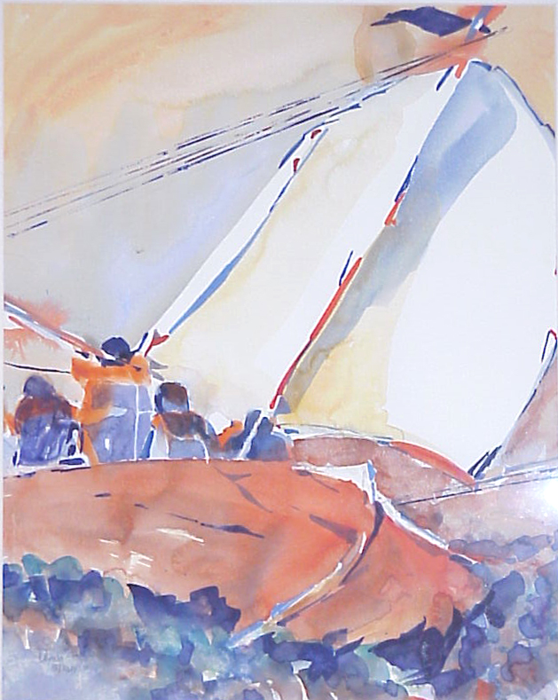
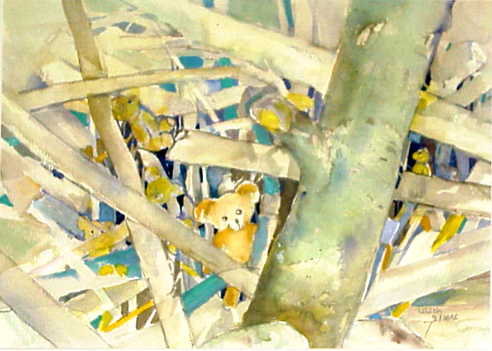
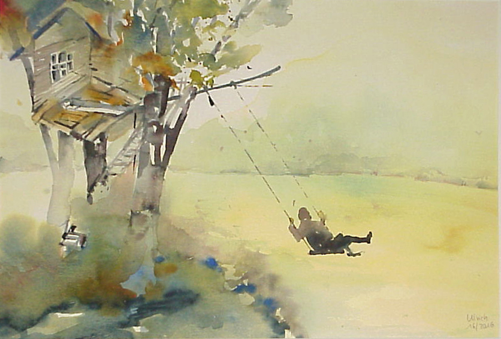

Kochbuchausstellung
„So hat Uroma gekocht“
Ab Mittwoch, 12.4.2017 Ausstellung in der Bücherei Bilfingen, Ebbstraße
während der Öffnungszeiten
Mittwochs + Freitags 15 – 18:30 Uhr,
Sonntags 10:30 – 12 Uhr
Was darf es sein?
- Gespicktes Kalbsherz
- Kaffee ohne Kaffeebohnen
- Kriegsschlagsahne
- Eier über Monate frisch halten
- Brühe von rothen Schnecken
- Froschschenkel-Suppe
- Gebackene Lerchen
In einem dieser Kochbücher wurden 11 verschiedene Linzertorten-Rezepte aus 200 Jahren gesammelt. Wir werden diese Linzertorten nach und nach nachbacken.
Wenn Sie wollen, bekommen Sie immer freitags davon ein „Probiererle“

Ausstellung Delia Ulrich
Delia Ulrich aus Kämpfelbach-Ersingen stellt in der Kath. öffentl. Bücherei Bilfingen Aquarell-Bilder aus. Die Bilder können während der Öffnungszeiten der Bücherei angesehen werden.




Der aktuelle Jahresbericht für 2016 zum download.